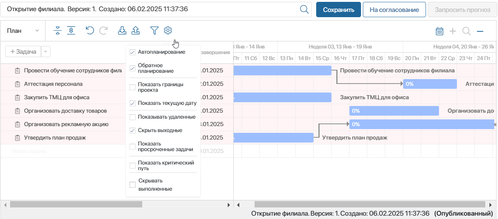
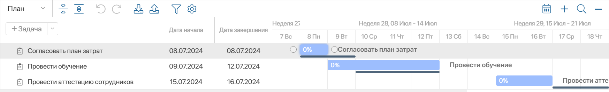
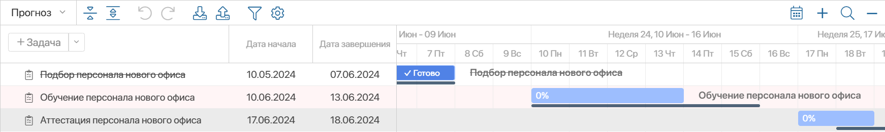
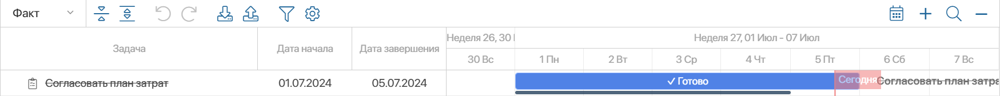
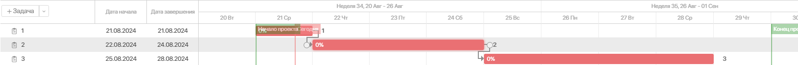
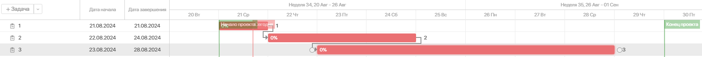
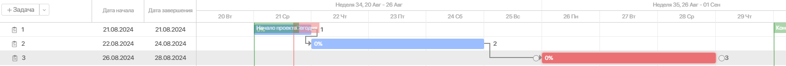
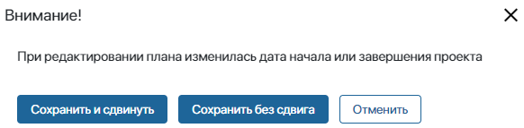

Если у вас есть право редактировать план, вы можете вносить в него изменения. Для этого в карточке проекта откройте вкладку Календарный план и нажмите кнопку Редактировать. План станет доступен для изменения на самой вкладке карточки или в дополнительно открывшемся окне в зависимости от настроек, установленных администратором.
Вы можете:
- добавить новые задачи;
- внести изменения в задачи;
- установить связи между задачами.
Используйте панель инструментов, которая размещена над планом.

Сохранив изменения, опубликуйте план или отправьте на согласование, если оно настроено. При публикации можно сдвинуть сроки проекта.
Обратите внимание, пока один сотрудник вносит изменения в план, для других пользователей редактирование заблокировано.
Панель инструментов для изменения плана
Вы можете выполнить следующие действия:
- выбрать версию плана для изменения. Для этого в строке поиска нажмите значок лупы;
- Сохранить — создать черновик плана и сохранить в нём внесённые изменения;
- На согласование — запустить процесс согласования плана. Это действие доступно, если согласование плана проекта настроено;
- Опубликовать — завершить работу с планом и опубликовать его черновик. Если согласование плана включено, эта опция доступна только для согласованной версии плана;
- Запросить прогноз — отправить запрос на установку прогнозных сроков выполнения задач. Опция доступна для опубликованной версии плана и позволяет исполнителям выставить предполагаемые сроки закрытия задач на форме полученного запроса;
- отобразить в плане проекта плановые, прогнозные или фактические сроки выполнения задач с типами Задача и Контрольная точка. Для этого на панели инструментов в левом углу выберите вариант:
- План — показать даты, указанные в карточках задач в полях Дата начала* и Дата окончания*. После публикации плана проекта эти сроки утверждены для выполнения;
- Прогноз — отобразить прогнозные сроки, т. е. предполагаемые на текущий момент сроки выполнения. Выставлены в карточках задач в полях Дата начала (прогноз) и Дата окончания (прогноз). Исполнитель задачи может изменить эти сроки, если получит соответствующий запрос;
- Факт — показать даты фактического завершения задач. При этом даты начала отобразятся плановые. Обратите внимание, план проекта в этом режиме доступен только для чтения;
 — свернуть или развернуть все подзадачи в списке задач;
— свернуть или развернуть все подзадачи в списке задач; — отменить или восстановить последние действия. Опция активна до сохранения плана;
— отменить или восстановить последние действия. Опция активна до сохранения плана; — импортировать план проекта из файла формата .mpp;
— импортировать план проекта из файла формата .mpp; — экспортировать план проекта в файл формата .mpp;
— экспортировать план проекта в файл формата .mpp;- — перейти к текущей дате на диаграмме;
- — увеличить или уменьшить отображаемый период времени. План можно показывать с разбивкой на следующие периоды времени: день, неделя, месяц, квартал или год;
 — открыть окно поиска, чтобы задать параметры и отсортировать по ним элементы плана с учётом их вложенности. Администратор системы может определить поля для сортировки;
— открыть окно поиска, чтобы задать параметры и отсортировать по ним элементы плана с учётом их вложенности. Администратор системы может определить поля для сортировки;- — открыть меню опций автопланирования и отображения дополнительных данных. Их описание читайте ниже.
Автопланирование и опции отображения данных
Нажмите на панели инструментов значок шестерёнки, чтобы перейти к следующим опциям:
- Автопланирование — опция включена по умолчанию и позволяет автоматически передвигать вперёд даты связанных между собой задач;
- Обратное планирование — включите опцию, чтобы автоматически передвигать назад даты связанных между собой задач.
Поясним работу данных опций на примерах. Предположим, вы создали две задачи и связали их между собой. На плане они располагаются друг за другом — вторая задача начнётся, как только будет выполнена первая.
При включенной опции Автопланирование вы можете изменять дату начала первой задачи, передвигая её вперед. Чтобы связь между задачами сохранилась, дата начала второй изменится автоматически, также сдвигаясь вперёд по календарю.
Если вы включили опцию Обратное планирование и изменили дату начала второй задачи, сдвинув её назад по календарю, начало первой задачи также изменится автоматически.
Обратите внимание, если в настройках проекта включена опция Использовать рабочий календарь, и дата окончания связанной задачи выпадает на выходной день, то:
- при автопланировании эта дата перенесётся на первый рабочий день после выходного;
- при обратном планировании — на рабочий день, предшествующий выходному дню;
- Показать границы проекта — обозначить начало и конец проекта;
- Показать текущую дату — указать текущую дату;
- Показывать удаленные — отобразить задачи плана, удалённые в текущем черновике до его публикации. Вы можете восстановить эти задачи. Их можно увидеть только в режиме редактирования плана;
- Скрыть выходные — скрыть в плане проекта выходные дни. Опция доступна, если в проекте включена настройка Использовать рабочий календарь;
- Показать просроченные задачи — выделить просроченные задачи;
- Сравнить с базовым;
- Показать критический путь;
- Скрывать выполненные — не показывать завершённые задачи. При этом выполненная родительская задача с типом Задача отобразится, если в ней есть незавершённые подзадачи.
Чтобы выйти из режима редактирования и перейти к карточке проекта, нажмите  .
.
Сравнить с базовым
Опция позволяет дополнительно отобразить плановые даты задач опубликованной (базовой) версии, чтобы сравнить их с новыми сроками в текущем черновике, а также с прогнозными или фактическими сроками. Плановые сроки будут отмечены тёмно‑серой линией. Обратите внимание, дополнительно показать на диаграмме можно только данные опубликованной (базовой) версии плана. Используйте опцию в следующих случаях:
- если вы изменили сроки задач в новой версии плана, их легко можно сравнить со сроками опубликованной, т. е. базовой версии. Для этого в черновике плана включите опцию Сравнить с базовым;

- если вы хотите сравнить прогнозные сроки задач с плановыми, на панели инструментов выберите опцию Прогноз. На диаграмме отобразятся прогнозные сроки. Затем включите опцию Сравнить с базовым, чтобы на этой же диаграмме показать плановые сроки;

- чтобы сравнить фактические даты выполнения задач с плановыми, на панели инструментов выберите Факт. На диаграмме отобразятся даты завершения, когда ответственные нажали кнопку Сделано в своих задачах. Затем включите опцию Сравнить с базовым, чтобы на этой же диаграмме показать плановые сроки. На примере ниже видно, что задача фактически завершена на один день раньше плановой даты.

Показать критический путь
Критический путь — это последовательность связанных задач, от которых непосредственно зависит дата окончания проекта. Если какая-либо задача на критическом пути выполняется с опозданием, задерживается весь проект.
Включите опцию Показать критический путь, чтобы выделить на диаграмме красным цветом задачи, которые завершаются накануне даты окончания проекта или позже. Также будут выделены и связанные с ними задачи, если их сроки пересекаются или одна задача завершается накануне предыдущей. Например:
- задача 3 завершается накануне даты окончания проекта (28 и 29 августа). С ней связана задача 2, которая завершается накануне даты начала задачи 3. Такую же разницу имеют даты начала и завершения задач 1 и 2. Поэтому все три задачи составят критический путь проекта;

- сроки связанных задач 2 и 3 пересекаются, все три задачи войдут в критический путь;

- задача 2 завершается на два дня раньше даты начала задачи 3 (24 и 26 августа). Поэтому задача 2, а также связанная с ней задача 1 не входят в критический путь.

Сдвинуть сроки проекта
Если вы изменяли сроки задач плана, они могут оказаться за пределами сроков проекта. Тогда при публикации изменений в открывшемся окне выберите дальнейшее действие:

- опубликовать план и сдвинуть сроки проекта в соответствии с изменениями сроков задач плана;
- опубликовать план и оставить сроки проекта прежними;
- отменить публикацию и вернуться к редактированию плана.
Если план публикуется в ходе бизнес-процесса его согласования, опция сдвига сроков проекта автоматически не применяется.